Cartão de crédito necessário para criar sua conta gratuita.
O modelo tradicional diz apenas se você acertou ou errou. Essa métrica mascarada esconde falhas graves de raciocínio crítico que custarão caro no dia da prova.
Você estuda horas a fio, mas dias depois esquece tudo. Sem revisão baseada em ritmos biológicos, o seu tempo de estudo acaba sendo desperdiçado.
Sem diagnósticos precisos, você entra em um ciclo de estudar o que já domina, negligenciando os pontos críticos que realmente aumentariam sua nota.
Nosso Motor Analítico isola matematicamente o fator "chute". O que você ganha: Certeza inviolável de quais assuntos domina, garantindo confiança inabalável.
A plataforma sugere missões diárias rápidas antes de sua memória falhar. O que você ganha: Retenção a longo prazo sem precisar de longas e exaustivas horas de revisão.
Nossa IA explica o motivo exato da sua falha e desenha um plano de ação. O que você ganha: O fim imediato das dúvidas e economia de horas de pesquisa por gabaritos.
Visualize progresso em mapas de calor e seja recompensado por constância. O que você ganha: Fim da procrastinação e uma rotina de estudos altamente motivadora.